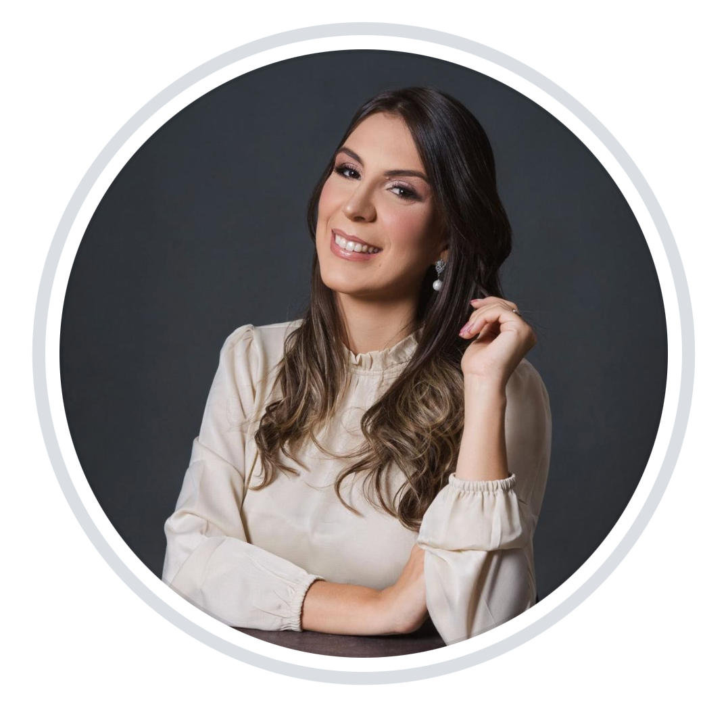

Pré-natal Completo
Acompanhamento integral do início ao fim da gestação, com exames, ultrassons e orientações individualizadas a cada trimestre.
Saber maisAcompanhamento individual da Dra. Marina Brito, do primeiro teste de gravidez ao nascimento. Pré-natal completo, plano de parto e suporte para gestações de alto risco — com escuta, ciência e tempo de consulta de verdade.

Marina é obstetra há mais de uma década e construiu sua prática em torno de uma ideia simples: gestar e parir são experiências íntimas, e merecem tempo, escuta e segurança técnica — não protocolos apressados.
Graduada pela UFPB, com residência em Ginecologia & Obstetrícia no Hospital das Clínicas de São Paulo e título de especialista pela FEBRASGO. Atua há 12 anos no acompanhamento de gestações fisiológicas e de alto risco, com formação complementar em parto humanizado e medicina fetal.
No consultório, as consultas duram em média 50 minutos. Há tempo para perguntas, para o que ninguém te explicou ainda, e para construir um plano que respeite o seu corpo, a sua família e o seu momento.
Três áreas de atuação — uma só forma de cuidar: com presença, ciência e calma.
Acompanhamento integral do início ao fim da gestação, com exames, ultrassons e orientações individualizadas a cada trimestre.
Saber maisManejo especializado de pré-eclâmpsia, diabetes gestacional, prematuridade e outras condições — com vigilância próxima e equipe multidisciplinar.
Saber maisConstrução conjunta de um plano respeitoso e seguro — suas preferências, a melhor evidência clínica e a logística do hospital, tudo alinhado.
Saber maisConsultas de até 50 minutos, escuta ativa e decisões compartilhadas. Aqui você nunca é apenas um prontuário.
Horários estendidos, atendimento por WhatsApp para dúvidas urgentes e disponibilidade real durante o terceiro trimestre.
Mais de 600 gestações de alto risco acompanhadas, com protocolos atualizados e vínculo direto com a UTI neonatal.
Tive minha primeira gestação aos 38 anos e estava aterrorizada com o rótulo de “alto risco”. A Dra. Marina me devolveu o protagonismo, sem nunca abrir mão da segurança. Saí de cada consulta mais tranquila do que entrei.
Construímos meu plano de parto juntas, e quando precisamos mudar de rota no hospital, ela me explicou cada passo. Foi o nascimento que eu quis, do jeito que era possível ser. Indico de olhos fechados.
Engravidei depois de duas perdas e a Dra. Marina aceitou me acompanhar mesmo no início, quando outros médicos disseram para esperar. Hoje meu filho tem 8 meses. Não tenho palavras.
Atendimento presencial em João Pessoa, com agenda priorizada para pacientes em pré-natal ativo.
Equipe de secretariado responde em até 1h em horário comercial. Para gestantes em acompanhamento, há canal direto pelo WhatsApp.